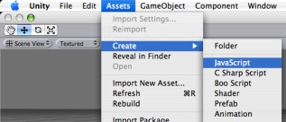
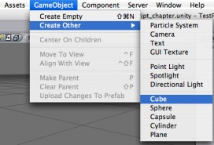
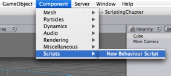
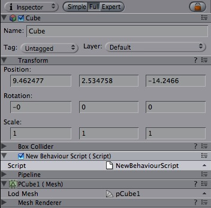
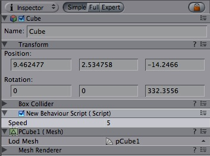

Previous
Previous
This is a short introduction on how to add and scripts in a project. For detailed information including the scripting API, please view the Scripting Reference.
Scripting inside Unity is done by writing simple behaviour scripts in JavaScript, C# or Boo. You can use one or all scripting languages in a single project, there is no penalty for using more than one. This manual addresses scripting with JavaScript unless specifically stated otherwise.
Creating new scripts
To create a new script, open the Assets -> Create -> JavaScript (or C Sharp Script or Boo Script) from the main menu. This will create a new script called NewBehaviourScript and place it in the selected folder in Project View. If no folder is selected in Project View, the script will be created at the root level.

You can edit the script by double-clicking on it in the Project View. This will launch Unitron, the script editor for Unity.
These are the contents of a new, empty behaviour script:
function Update () {
}
A new, empty script does not do a lot on its own, so let's modify it a bit:
function Update () {
print("Hello World");
}
Attaching scripts to objects
Save the above script and create a new object in a scene by opening GameObject -> Create Other -> Cube. This will create a cube Game Object in the scene.

Now attach the script to the cube object either by dragging the script from the Project View onto the cube object (in the Scene or Hierarchy View) or by selecting the cube and then choosing the script from the Component -> Scripts -> New Behaviour Script. If you have changed the name of your script, you will see the name you chose appear in the menu.

Now, if you select the cube and look at the inspector, you will see that the script is now visible.

Press Play to test your creation. You should see the text "Hello World" appear beside the Play/Pause/Step buttons. Exit play mode when you see it.

Manipulating the object
A print statement like in above example, can be very handy when debugging your script, but this one is not doing anything to the cube it is attached to. Let's change the script to make the cube rotate slowly around its Y axis.
function Update () {
transform.Rotate(0, 5*Time.deltaTime, 0);
}
So what's all this about? The line that has replaced the print statement first fetches the cube object's Transform and then tells it to rotate 0 degrees around its X axis, 5 around the Y axis and 0 around the Z axis every second. We multiply the number of degrees with Time.deltaTime in order to make the rotation speed consistent on different machines with different frame rates. Remember that the Update function is called on every frame and this variable contains the number of seconds since last time it got called.
To find out which values you can modify, a good starting point is to look on the Inspector window of an object. There you'll see a list of Components, with each Component having a number of Properties. As a rule of thumb, you can modify these properties using the Component.property syntax. So if you add a Rigidbody to the cube (making it affected by physics object), you can change the mass of the cube's Rigidbody from scripting by assigning a value to rigidBody.mass.
Adding Variables
When playing around with the above script, you might want to adjust the speed of rotation. This can be done by modifying the script directly, but requires Unity to recompile it every time. Also if you attach the script to multiple objects they will all rotate in the same way.
To get around this, you can add variables to your script.
var speed = 5.0;
function Update () {
transform.Rotate(0, speed*Time.deltaTime, 0);
}
Note that after recompiling, the speed variable shows up in the cube's Inspector.

Hit Play and try modifying the value inside the Inspector while the game is running. The speed will change instantly.
Where to go from here
This was just a short introduction on how to use scripts inside the Editor. For more examples, check out the Script Tutorial project that comes with Unity. You could also read through Scripting Overview inside the Script Reference, which contains a more thorough introduction into scripting with Unity plus pointers into the reference itself for in-depth information. Also take a look at the Unity Forums.